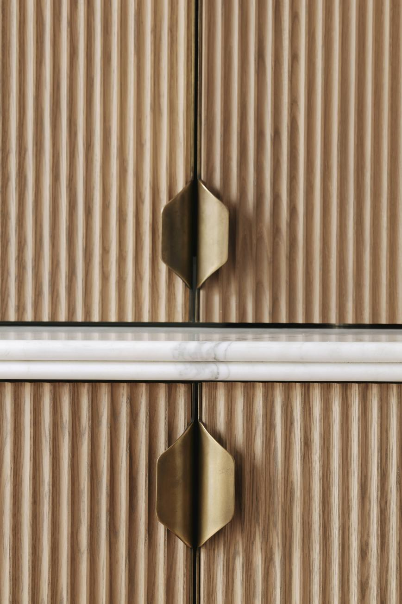

About
Studio.ZA was founded by Zoe Adden in 2015 with a simple conviction: that the best interior design is about the people who live inside it. The way they move, gather, rest, cook, and celebrate.
We work primarily in London and the English countryside, where the brief is to make a home feel elevated and comfortable. That might mean we commission a bespoke kitchen from our network of talented joiners, to sourcing vintage items across the world.
The studio is deliberately small with Zoe leading every project personally.
Philosophy
We believe in fabrics that can be washed, surfaces that get better with age, and sofas deep enough to actually fall asleep on. Art, colours and textures that bring your home to life in surprising ways and furniture that just works.
Above all, we believe that a well-designed home is the foudnation for a life well lived. For you, your family, and your friends.
Start a conversationHow we work
We meet at your home, existing or prospective, and spend time understanding how you actually live. No questionnaires, just conversation.
We present a single, considered design direction. Not three options to hedge our bets. Just one, because we've done the thinking and we stand behind it.
We draw on two decades of supplier relationships from established makers to the small workshops we've discovered along the way to find pieces that are genuinely right.
We manage the installation ourselves. On handover day, every detail is taken care of from the sheets on the bed to the flowers on the table. You walk in and it's home.